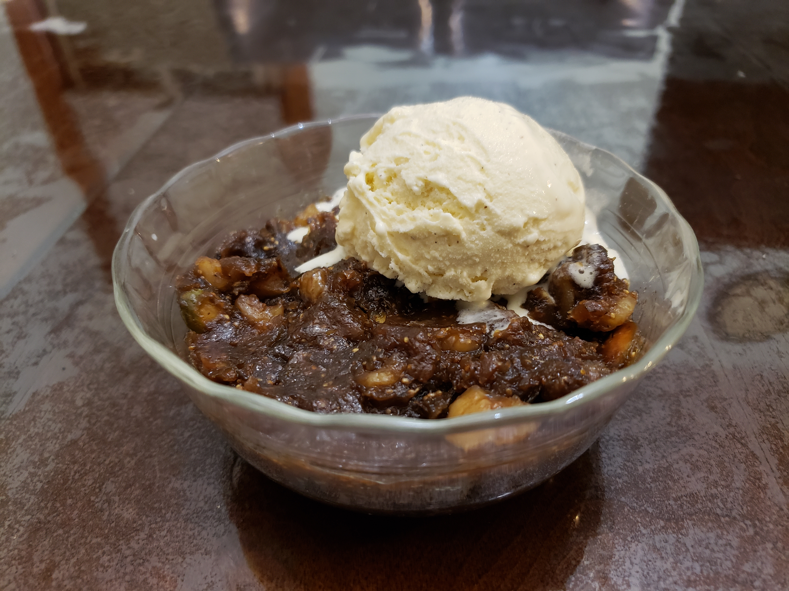

Anjeer Halwa

Ingredients:
- 1 lb Dried figs, coarsely chopped
- 2 cups Water
- 1/3 cup Ghee
- 1 cup Walnuts, finely chopped
- 1/2 cup Pistachios, finely chopped
- 1 tsp Ground cardamom
Instructions:
- Add the dried figs and water to a pot.
- Cook partially covered on medium heat for 20 to 25 mins or until most of the water is evaporated and the figs and super soft and mushy.
- With an immersion blender or a potato masher, Coarsley mash the figs and then add ghee, walnuts, pistachios, and cardamom.
- Cook on low-medium for 5 to 10 mins, or until it thickens to a pudding-like consistency. Serve in bowls with a scoop of vanilla ice cream.